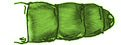
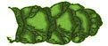
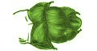
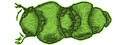

| 1a Has 5-12 flowers in
each row |

|
Go to 2 Sarcocornia |
| 1b Has only 3 flowers in each row |

|
Go to 3 |
| 2a Flowers are in a single
row |

|
Sarcocornia quinqueflora |
| 2b Middle flowers in each row are
doubled |

|
Sarcocornia blackiana |
| 3a All flowers are bisexual |
|
Go to 4 Halosarcia |
| 3b Middle flower is bisexual, outer
flowers are male |
|
Sclerostegia arbuscula |
| 4a Terminal inflorescence
almost even |
 |
Halosarcia pruinosa |
| 4b Terminal inflorescence has separate
fan shaped bracts |
 |
Halosarcia flabelliformis |
| 4c Terminal inflorescence is spiky |
 |
Halosarcia indica (has 2 subspecies) |
| 4d Terminal inflorescence is uneven |
 |
Go to 5 |
| 5a Seed is comma shaped,
reddish-brown to-black, with concentric rings of bumps. Central
flower is shaped thus: |
|
Halosarcia pergranulata |
| 5b Seed oval, smooth, red-brown.
Central flower shaped thus: |
|
Halosarcia halecnemoides |
- Halosarcia pergranulata and H. halocnemoides sometimes hybridise.
- Sarcocornia species are "decumbent" - they are low growing, they lay down and set roots at the nodes on the stem.
- The colours in this key are for illustrative purposes only - see a text book for information on the exact colouration of different species.
|
|
Please feel free to use this key, but respect the
copyright. All use of the key and illustrations should be referenced
as follows:
Coleman PSJ (1996) An Artificial Key
to the Samphires of the Saltfield , Delta Environmental Consulting
, Adelaide |
|